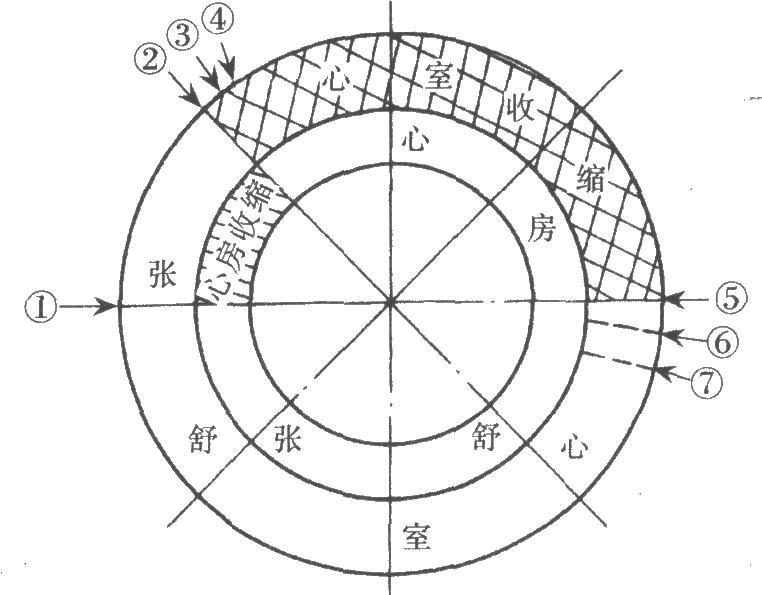

位置：胸腔纵隔内，两肺之间，膈肌上方，约2/3偏正中线左侧。
四腔：左心房、左心室、右心房、右心室。左心室壁最厚（体循环泵血）。
瓣膜：
心壁三层：心内膜、心肌（最厚）、心外膜（即心包脏层）。
冠状循环：心脏自身的血液供应。冠状动脉起自主动脉根部，冠状静脉汇入冠状窦→右心房。
心动周期 = 心房收缩 + 心室收缩 + 心室舒张（全心舒张期）。心率75次/分时，一个周期约0.8秒。
心音：

2025年全国联赛第40题：对以下关于哺乳动物心脏结构的陈述进行正误判断：
答案：A、B、D为真，C为假。